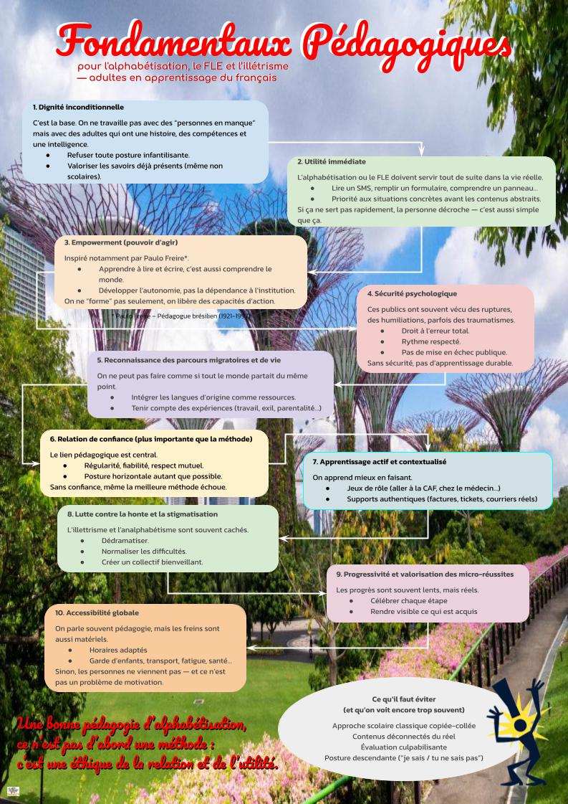

Les fondamentaux
Pour l'alphabétisation, le FLE et l'illettrisme — adultes en apprentissage du français

Une bonne pédagogie d'alphabétisation, ce n'est pas d'abord une méthode : c'est une éthique de la relation et de l'utilité.